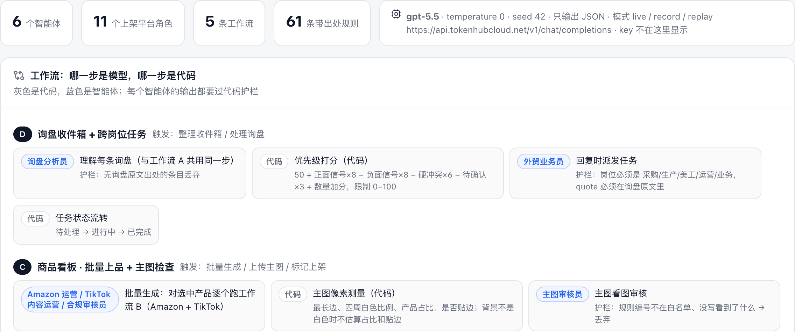
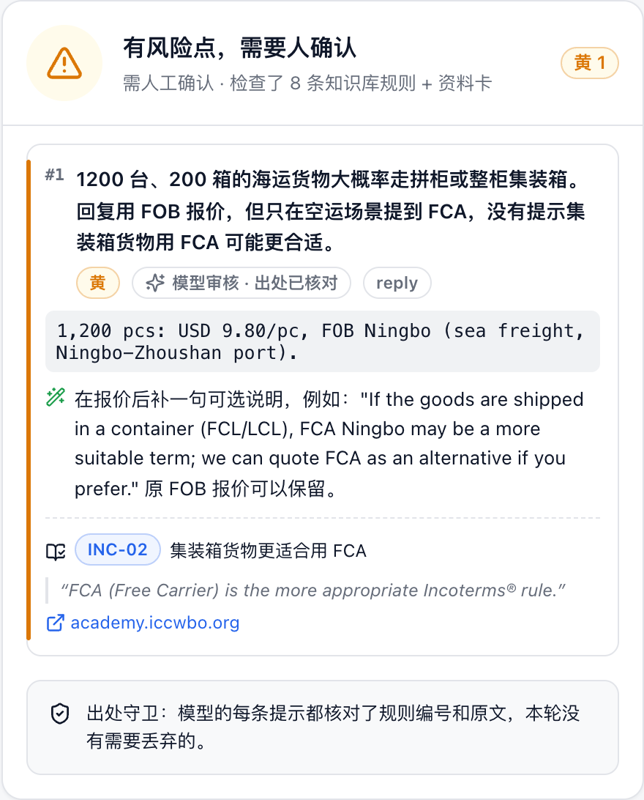

宁波中小外贸工厂的业务员和运营：询盘回复对 B 端进口商（阿里国际站），上架文案对 C 端消费者（Amazon、TikTok 等），英语一般，没有专职合规。
A · 询盘回复：粘贴询盘 + 一句中文意图 → 询盘分析（每条带原文）→ 买家语言回复 + 给采购 / 生产的中文备忘 + 派任务 → 校验 → 中文一句话改第 2 轮，逐词对比。
B · 多平台上架：同一张资料卡 → 11 个平台可选、每个平台选 6 种语言之一 → 按平台和所在市场的规则分别校验。
E · 询盘 → 上架交接：回完询盘一键生成上架文案，代码逐项核对回复和 Listing 有没有说法打架（没有的认证、没检测的材料宣称、容量、电压）。
D · 收件箱：按公开公式排优先级（每一分挂询盘原文），可从 CSV 导入询盘。C · 商品看板：产品 × 主图 / Amazon / TikTok 状态一屏看清，批量生成，主图按 Amazon 10 条要求检查，导出 CSV。
角色模式：评委选“商户 / 合规审查员 / 消费者”，左边只留这条线的页面，步骤条逐步执行真实操作。
浏览器单页（中文界面，角色模式 / 完整工作台） │ 询盘（粘贴或 CSV）/ 资料卡 / 中文修改意见 / 主图 ▼ 本地服务 server.py（Python 标准库，双击启动） ├ 理解：询盘分析员 → JSON（无原文出处的条目丢弃） ├ 生成：业务员 / 11 个平台运营角色（注入对应规则摘要） ├ 校验①：代码规则（资料卡比对 + 正则 / 长度规则） ├ 校验②：合规审核员 → 出处守卫（编号 + 原文） ├ 交接核对：回复 ↔ Listing（代码） ├ 主图：像素测量（代码）→ 主图审核员（编号 + 看到的内容） └ 反馈：高亮批注 · 红黄绿 · 逐词对比 · 任务 · 调用日志 ▼ kb/rules.json（61 条） data/products.json（两家工厂资料卡） config/agents.json（配置导出） cache/（回放） state/（看板、收件箱）
| 智能体 | 任务 | 触发 |
|---|---|---|
| 询盘分析员 | 买家画像、需求、与资料卡的冲突（每条带原文） | 新询盘 / 整理收件箱 |
| 外贸业务员 | 买家语言回复 + 中文备忘 + 派任务 | 新询盘 / 修改意见 |
| 平台运营 ×11 | Amazon 美英德日、TikTok 墨西哥、eBay、Shopify、Etsy、Walmart、Mercado Libre、AliExpress 文案 | 新品上架 / 修改意见 |
| 合规审核员 | 按“模型判断”类规则审核，须带编号和原文 | 每次生成后 |
| 主图审核员 | 看图判断文字、徽章、道具、是否实拍 | 上传主图后 |
现场经赛事 Tokenhub 调用 gpt-5.5（OpenAI 兼容接口），也支持 Claude。温度 0、只输出 JSON。三种模式：实时 / 录制 / 回放（断网演示）。界面“智能体配置”页和 app/config/agents.json 是同一份配置（附录 A）。一条询盘回复加改一轮约 0.24 美元（实测用量 × 官方价）。94 项自动化测试。
① 原文高亮批注，点高亮跳到依据 ② 红 / 黄 / 绿风险等级 ③ 与上一轮的逐词对比 ④ 派给采购 / 生产 / 美工的任务 ⑤ 模型审核没跑成时明确提示，风险等级不会显示绿色。系统不自动发送，红黄提示必须人看过。
演示用的工厂、产品、询盘均为虚构。规则摘录来自公开页面（Amazon Seller Central、eCFR、ICC Academy、TikTok Shop MX、墨西哥经济部 NOM、EUR-Lex 等），没有爬取付费数据，没有绕过验证码。key 只存本机。本工具给出风险提示，不构成法律意见。

| 智能体 | 6 个（询盘分析员、外贸业务员、Amazon 运营、TikTok 内容运营、合规审核员、主图审核员）+ 9 个其他平台的运营角色；每个有职责、输入、输出、护栏、提示词文件（app/prompts/*.md） |
| 工作流 | A 询盘回复 · B 多平台上架 · C 商品看板 · D 收件箱 + 跨岗位任务 · E 询盘 → 上架交接；每一步标明是智能体还是代码 |
| 知识库 | app/kb/rules.json：61 条规则 / 17 类，每条有原文摘录、链接、抓取日期、检查方式（代码正则 / 长度，或交给模型判断）；按平台和市场挑出适用规则；未核实的不参与检查。出处自检结果在 app/kb/source_check.json |
| 模型 | 赛事 Tokenhub · gpt-5.5（OpenAI 兼容 Chat Completions），温度 0、seed 42、只输出 JSON；也可切 Claude。key 只在本机，界面不显示 |
| 触发条件 | 业务员在“询盘回复”页选中询盘，点“理解 → 生成 → 校验”（日志 trigger = 收到新询盘） |
| 输入 | 询盘原文（要 UL、BPA free、FOB 空运、20 天交货、货到 60 天付款）+ 业务员中文意图 + 资料卡 KET-17S + 阿里国际站规则摘要 |
| 调用过程 | ① 询盘分析员：抽出 5 条冲突，每条附询盘原文 → ② 外贸业务员：英文回复 + 中文备忘 + 4 条任务 → ③ 代码规则：认证、材料、价格、MOQ、交期、付款、FOB，0 条 → ④ 合规审核员：拿到 8 条规则，提出 1 条，规则编号和原文都通过出处守卫 |
| 返回结果 | 风险等级黄：1,200 台海运走集装箱，FCA 比 FOB 更合适；依据 INC-02（ICC 原文与链接）。回复如实写明没有 UL、没测 BPA、FOB 只走海运、交期 35 天、不接受货到 60 天付款 |
| 设备 / 界面反馈 | 笔记本浏览器：回复里对应句子高亮，点高亮跳到右侧风险卡（规则原文 + 链接）；“出处守卫”写明丢弃条数；调用日志记下每步的角色、输入、返回、耗时、token。业务员说一句“按风险提示全部修改”，第 2 轮变绿，逐词对比显示新增那句 |
| 实时记录 | 2026-10-30 23:58 在赛事 Tokenhub 用 gpt-5.5 实时跑同一条询盘（运行 acd116ca）：理解 8.7 秒、生成 8.8 秒、审核 4.8 秒，共 22.3 秒，结果绿、0 条提示（docs/demo-runs/live-gpt-5.5-INQ-US-01.json） |

| 项 | 作用 |
|---|---|
| 笔记本一台（macOS 或 Windows，Python 3.9+，Chrome 或 Edge） | 运行本地服务 app/server.py，浏览器打开界面；双击 start-mac.command / start-windows.bat 启动，不装依赖 |
| 大屏（可选第二块屏） | 循环播放自动演示（#tour=loop）；或放“AI 找茬”二维码和排行榜，手机只能访问找茬页面 |
| 赛事 Tokenhub · gpt-5.5 | 询盘理解、回复生成、上架文案生成、合规审核、主图看图审核（实时模式） |
| 回放缓存 app/cache/（179 条） | 录好的真实模型返回；回放模式断网也能完整演示，结果一秒出来 |
| 规则知识库 app/kb/rules.json（61 条） | 生成时注入规则摘要，审核时作为唯一依据；每条附原文和链接 |
| 资料卡 app/data/products.json（两家示例工厂、5 个产品） | 认证、价格阶梯、MOQ、交期、付款方式；代码用它核对数字和认证 |
| 示例询盘 app/data/inquiries.json（13 条，6 个市场） | 固定演示输入（虚构），保证现场可重复；也可从 CSV 导入新询盘（要实时模式处理） |
| 示例主图 app/static/samples/ | 主图检查演示（示意图，不是实拍） |
TRADEDESK_MODE=replay python3 server.py（或双击启动脚本），浏览器打开 http://127.0.0.1:8765。#roles 给评委选角色；大屏打开 #tour=loop 循环播放；需要找茬游戏时用 --lan 启动。python3 -m unittest discover -s tests，确认 94 项通过。| 现象 | 处理 |
|---|---|
| 页面打不开、状态栏红字 | 服务没起来：看终端报错，重新运行启动命令 |
| 实时模式报“模型调用失败” / 超时 | 网络或额度问题：左下角模型卡片切回“回放 · 不联网”，按同样步骤重演；中文报错里写了是 key、地址、余额还是限流 |
| 回放模式提示“这一步没有录好的结果” | 输入和录制时不一样：点“换个角色”重新进入，或重新点示例询盘卡片；改稿只用“按风险提示全部修改” |
| 看板、收件箱是空的或被点乱了 | 开摊自检页点“一键预热”（不联网）；导入的询盘点“清除已导入的询盘” |
| 页面卡住超过 60 秒 | 刷新页面；仍不行就重启服务，用回放模式 |
| 来不及手动操作 | 点右上角“自动演示”，跟着字幕讲；Esc 退出 |
模型审核失败时，代码规则的结果仍然显示，风险等级不会是绿色；系统不自动发送任何内容。